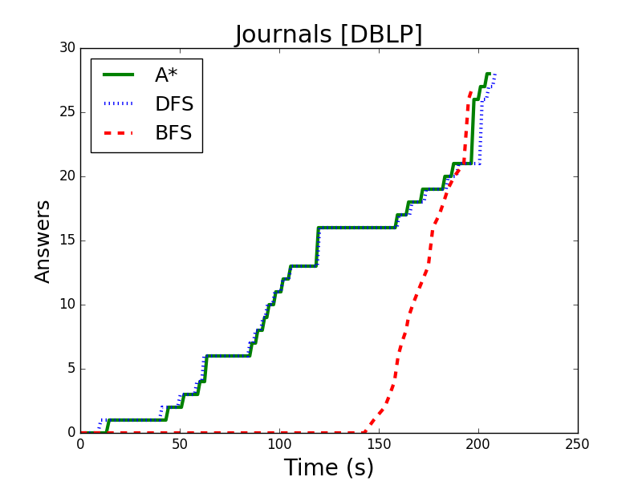

Evaluating navigational RDF queries over the Web
Introduction
See the pdf Appendix to review the runs for selected queries. Queries are stated here.
This should make the point that informed search works better than uninformed search. If we know the property path we are looking for, why don’t we take advantage of that?
Selected queries
Notes
- Queries numbering is not contiguous, it follows a seemingly random pattern
- 0-9 range is meant for trivial queries
- 10-19 range is meant for dblp queries
- 20-29 range is meant for yago queries
- 30-39 range is meant for previously used queries
- The 3 queries mentioned on the paper as qA qB qC, are q15, q23, and q30
- Plots for parallelism are not yet on these slides
- But all plots are available on the pdf Appendix
Prefixes
# DBLP
dblp: <http://dblp.l3s.de/d2r/resource/>
dblpAuthor: <http://dblp.l3s.de/d2r/resource/authors/>
# dbPedia
dbr: <http://dbpedia.org/resource/>
dbo: <http://dbpedia.org/ontology/>
# YAGO
yago: <http://yago-knowledge.org/resource/>
frmb: <http://framebase.org/ns/>
# Common
dc: <http://purl.org/dc/elements/1.1/>
rdfs: <http://www.w3.org/2000/01/rdf-schema#>
swrc: <http://swrc.ontoware.org/ontology#>
Q10 Publications
Q10 Publications
select * where {
dblpAuthor:Michael_Stonebraker ^dc:creator/dc:title ?paper
}
b = QueryBuilder(n, "Author")
b.frm("Author").through(DC.creator).backwards_to("Paper")
b.frm("Paper").through(NAME).final("Title")
Answers vs expansions

Answers vs time
Q11 Journals
Q11 Journals
select * where {
dblpAuthor:Michael_Stonebraker ^dc:creator/swrc:journal/rdfs:label ?paper
}
b = QueryBuilder(n, "Author")
b.frm("Author").through(DC.creator).backwards_to("jPaper", NodeFilter_regex(".*journal.*"))
b.frm("jPaper").through(SWRC.journal).to("Journal")
b.frm("Journal").through(NAME).final("Name")
Answers vs expansions

Answers vs time

Q12 Conferences
Q12 Conferences
select * where {
dblpAuthor:Michael_Stonebraker ^dc:creator/swrc:series/rdfs:label ?paper
}
b = QueryBuilder(n, "Author")
b.frm("Author").through(DC.creator).backwards_to("Paper")
b.frm("Paper").through(SWRC.series).to("Conference")
b.frm("Conference").through(NAME).final("Name")
Answers vs expansions

Answers vs time
Q13 CoAuthor
Q13 CoAuthor
select * where {
dblpAuthor:Michael_Stonebraker ^dc:creator/dc:creator/rdfs:label ?coAuthorName
}
b = QueryBuilder(n, "Author")
b.frm("Author").through(DC["creator"]).backwards_to("Paper")
b.frm("Paper").through(DC["creator"]).to("CoAuth", NodeFilter_but(n))
b.frm("CoAuth").through(NAME).final("Name")
Answers vs expansions

Answers vs time

Q14 CoAuthor* IRIs
Q14 CoAuthor* IRIs
select * where {
dblpAuthor:Michael_Stonebraker (^dc:creator/dc:creator)* ?paper
}
b = QueryBuilder(n, "Author")
b.frm("Author").through(DC["creator"]).backwards_to("Paper")
b.frm("Paper").through(DC["creator"]).final("CoAuth", NodeFilter_but(n))
b.frm("CoAuth").through(DC["creator"]).backwards_to("Paper'")
Answers vs expansions

Answers vs time

Q15 CoAuthor* (qA)
Q15 CoAuthor* (qA)
select * where {
dblpAuthor:Michael_Stonebraker (^dc:creator/dc:creator)*/foaf:name ?coAuthorName
}
b = QueryBuilder(n, "Author")
b.frm("Author").through(DC["creator"]).backwards_to("Paper")
b.frm("Paper").through(DC["creator"]).to("CoAuth", NodeFilter_but(n))
b.frm("CoAuth").through(DC["creator"]).backwards_to("Paper'")
b.frm("Paper'").through(DC["creator"]).to("CoAuth")
b.frm("CoAuth").through(NAME).final("Name")
Answers vs expansions

Answers vs time

Q20 CoActor*
Q20 CoActor*
select * where {
dbr:Kevin_Bacon (^dbo:starring/dbo:starring)*/rdfs:label ?coActorName
}
b = QueryBuilder(n, "Actor")
b.frm("Actor").through(DBO["starring"]).backwards_to("Movie")
b.frm("Movie").through(DBO["starring"]).to("CoActor", NodeFilter_but(n))
b.frm("CoActor").through(DBO["starring"]).backwards_to("Movie")
b.frm("CoActor").through(NAME).final("Name")
Answers vs expansions

Answers vs time
Q22 CoActor* IRIs
Q22 CoActor* IRIs
select * where {
# PLAYS_IN: yago:actedIn | frmb:dereif-Performers_and_roles-playsInPerformance
yago:Kevin_Bacon ( PLAYS_IN/^PLAYS_IN )* ?coActorIRI
}
b = QueryBuilder(n, "Actor")
b.frm("Actor").through(ACTED_IN).to("Movie")
b.frm("Movie").through(ACTED_IN).backwards_final("CoActor", NodeFilter_but(n))
b.frm("CoActor").through(ACTED_IN).to("Movie")
Answers vs expansions

Answers vs time

Q23 CoActor* sameAs (qB)
SPARQL
This query has no sane, readable SPARQL equivalent, as it has too many optional edges.
From each State, any of these Predicates can be used,
dbo:starringyago:actedInfrmb:dereif-Performers_and_roles-playsInPerformanceowl:sameAs
And the final state can be reached through any of
foaf:namerdfs:label
Automaton code
b = QueryBuilder(n, "Actor")
b.frm("Actor").loop(SAME_AS)
b.frm("Actor").through(ACTED_IN).to( "Movie")
b.frm("Actor").through(ACTOR).backwards_to("Movie")
b.frm("Movie").loop(SAME_AS)
b.frm("Movie").through(ACTOR).to( "CoActor", NodeFilter_but(n))
b.frm("Movie").through(ACTED_IN).backwards_to("CoActor")
b.frm("CoActor").through(ACTED_IN).to( "Movie")
b.frm("CoActor").through(ACTOR).backwards_to("Movie")
b.frm("CoActor").through(NAME).final("Name")
Answers vs expansions

Answers vs time

Q30 NATO Business’ (qC)
Q30 NATO Business’ (qC)
Similar to Gubichev’s Q1 (does not ends in yago:Berlin)
select * where {
yago:wikicat_Member_states_of_NATO ^rdf:type/^yago:dealsWith/(yago:isLocatedIn*) ?place
}
b = QueryBuilder(YAGO["wikicat_Member_states_of_NATO"], "NATO")
b.frm("NATO").through(RDF["type"]).backwards_to("Area")
b.frm("Area").through(YAGO["dealsWith"]).backwards_to("Place", None, NodeFilter_but(n))
b.frm("Place").through(YAGO["isLocatedIn"]).to("Place")
Answers vs expansions

Answers vs time

Q32 Airports in Netherlands
Q32 Airports in Netherlands
Similar to Gubichev’s Q2, but yago:dealsWith was removed
select * where {
yago:wikicat_Capitals_in_Europe ^rdf:type/yago:isLocatedIn* ?place
}
# Using wikicat_* instead of wikicategory_*
b = QueryBuilder(n, "EuropeCapitals")
b.from_("Airports").through( RDF["type"] ).backwards_to("airport") # AirportList ~> airport
b.from_("airport" ).through(YAGO["isLocatedIn"]).final("Place") # airport -> Place
b.from_("Place" ).through(YAGO["isLocatedIn"]).to("Place") # Place -> Place
Answers vs expansions
Answers vs time

Other queries used
Q16 Paper IRIs from Coauthor*
Q16 Paper IRIs from Coauthor*
select * where {
dblpAuthor:Michael_Stonebraker (^dc:creator/dc:creator)*/^dc:creator ?paper
}
b = QueryBuilder(n, "Author")
b.frm("Author").through(DC["creator"]).backwards_to("Paper")
b.frm("Paper").through(DC["creator"]).to("Author")
b.frm("Author").through(DC["creator"]).backwards_final("Paper'")
Answers vs expansions

Answers vs time

Q17 Paper from Coauthor*
Q17 Paper from Coauthor*
select * where {
dblpAuthor:Michael_Stonebraker (^dc:creator/dc:creator)*/^dc:creator/dc:title ?paperTitle
}
b = QueryBuilder(n, "Author")
b.frm("Author").through(DC["creator"]).backwards_to("Paper")
b.frm("Paper").through(DC["creator"]).to("Author")
b.frm("Author").through(DC["creator"]).backwards_to("Paper'")
b.frm("Paper'").through(DC["title"]).final("PaperTitle")
Answers vs expansions

Answers vs time